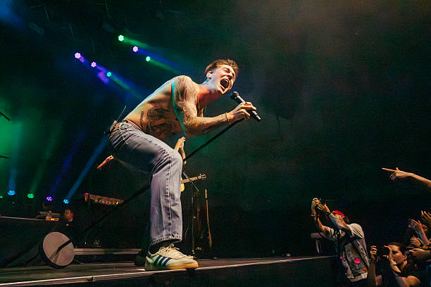
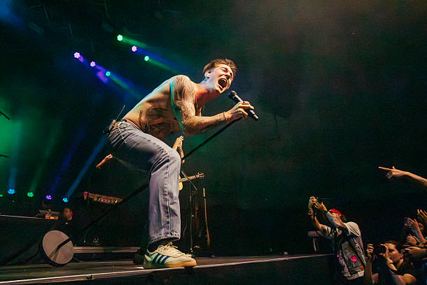

Zijn jeugd
Cameron Whitcomb werd geboren in Peace River, Alberta, maar groeide op in Nanaimo, British Columbia. In zijn jeugd luisterde hij vooral naar hiphop, artiesten als Eminem, Swollen Members en Madchild. Rond zijn zeventiende verliet hij huis en verhuisde naar Kamloops, waar hij werkte aan de Trans Mountain Pipeline. Zijn muzikale koers veranderde toen zijn broer hem liet kennismaken met Johnny Cash, waarna hij fan werd van Tyler Childers, wat een belangrijke invloed kreeg op zijn muzikale stijl. Toen hij negentien was, begon hij karaokevideo's te posten op Reddit — dit leidde ertoe dat hij werd ontdekt en uiteindelijk meedeed aan American Idol.
 
